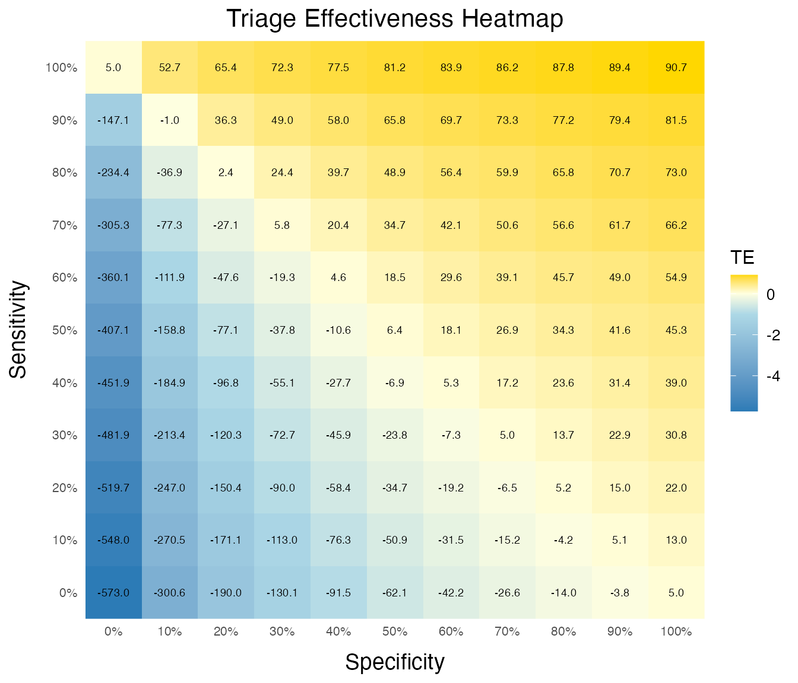
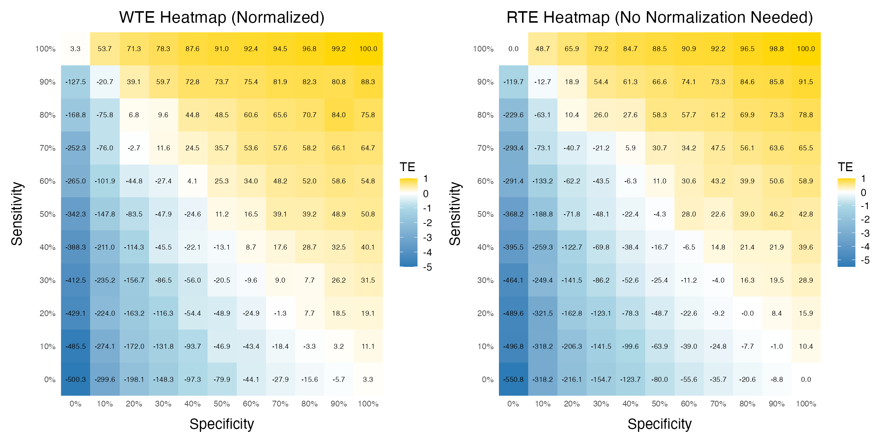
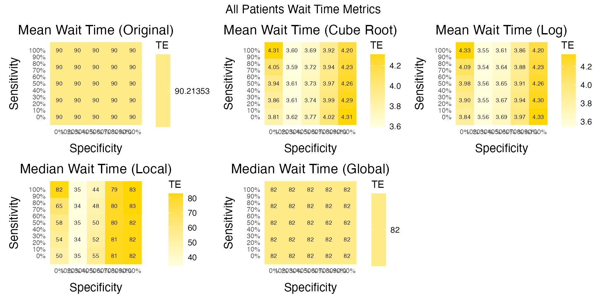
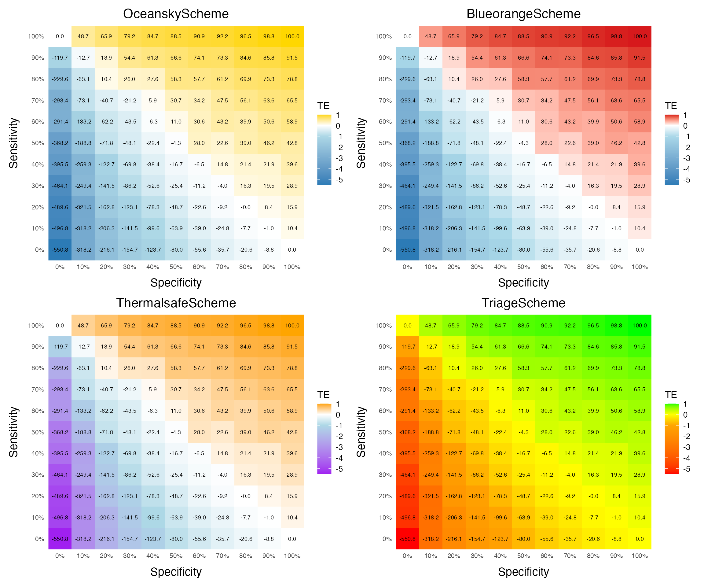

library(trieff)
#> Loaded trieff 1.0.0
#> System capable of parallel processing with multisession backend
#> Maximum available workers: 16
#> Note: Individual functions will determine optimal core usage at runtime
library(dplyr)
#>
#> Attaching package: 'dplyr'
#> The following objects are masked from 'package:stats':
#>
#> filter, lag
#> The following objects are masked from 'package:base':
#>
#> intersect, setdiff, setequal, unionIntroduction
The heatmap functionality in trieff is primarily a research tool designed to explore and validate the theoretical properties of Triage Effectiveness (TE). Unlike other features in the package, heatmap generation is computationally intensive and typically used for understanding fundamental relationships rather than day-to-day analysis.
Prerequisites
Understanding of TE concepts (
vignette("getting_started"))Familiarity with simulation (
vignette("sim_te"))Could require some computational resources.
Relationship to Simulation
The heatmap analysis builds on the simulation framework described in
vignette("sim_te"). However, it requires significantly more
computational resources due to repeated simulations across
sensitivity/specificity combinations.
Important Considerations
- Computational Cost: Full heatmap generation with typical ED datasets (>100,000 visits) can take several minutes up to hours depending on step size.
- Intended Use: This tool is meant for researchers validating TE properties or comparing results across different ED settings.
- Limitation: The heatmap does not naturally handle different units and it is recommended to only simulate one unit per heatmap.
Understanding Heatmap Results
A TE heatmap visualizes how different combinations of sensitivity and specificity affect TE values. The key patterns we have established so far are:
- The sum of sensitivity and specificity must exceed 1 for positive TE values
- When this sum exceeds 1, improving sensitivity yields slightly better gains
- When below 1, improving specificity is more beneficial
- Above rules are generally hard to validate when the sum is very close to 1, likely due to stochastic reasons.
- If inflow of LOSET patients are uneven during operational hours and the mean waiting time is also uneven, such as that more time critical cases arrives during the night when waiting times are longer the values where the sensitivity specificity sum is close to 1 can diverge further from 0.
Let’s examine these patterns with a small dataset:
# Get a small sample (1 week) of data
small_data <- init(sem_malmo_synth[
sem_malmo_synth$arrival >= min(sem_malmo_synth$arrival) &
sem_malmo_synth$arrival <= min(sem_malmo_synth$arrival) + lubridate::days(7),
])
data <- sem_malmo_synth %>%
filter(unit == "medical") %>% # As noted before - use only one unit per sim.
init()
# Generate heatmap data
# WARNING: Even with this small dataset, this may take several minutes
heatmap_data <- data %>%
sim_heat(n_workers = 12, step_size = 10)
#> [1] "Creating segments out of dataframe 2025-03-07 13:17:05.252771"
#> [1] "Identified segments, filtering LOSET segments.."
#> [1] "Processing 527 segments with LOSET cases"
#> [1] "Starting simulations with combinations 2025-03-07 13:17:06.284955"
#> [1] "Simulations complete 2025-03-07 13:17:44.24941"
plot_te_heatmap(heatmap_data) # Create heatmap
We can also normalize the heatmap with a single argument:
plot_te_heatmap(heatmap_data, normalize = TRUE) # Create heatmap ## Alternative Calculations
The package includes several alternative TE calculations (cube root,
log, median-based) primarily for research validation. These can be
accessed using alt_calc = TRUE in
sim_heat_alt(), i.e. it is not possible based on the
sim_heat():
# Example of alternative calculations
alt_calc <- sim_heat_alt(data, alt_calc = TRUE, step_size = 25) %>%
plot_te_heatmap(show_alt_calc = TRUE)
#> [1] "Creating segments out of dataframe 2025-03-07 13:17:44.580443"
#> [1] "Processing segments."
#> [1] "Calculating global median from reference simulation 2025-03-07 13:17:45.2455"
#> [1] "Starting simulations with combinations 2025-03-07 13:17:48.229438"
#> [1] "Simulations complete 2025-03-07 13:18:01.061832"
alt_calc$te_batch # The first possible alternative heat map
alt_calc$normalized_te_batch # The second possible alternative heat map
alt_calc$all_batch # The third possible alternative heat map These alternatives help validate that the patterns we observe aren’t artifacts of our calculation method.
Color Scheme Options
The plot_te_heatmap function now supports different
color schemes through the color_scheme parameter. This is
particularly useful for choosing appropriate visualizations for
different audiences, including options that are colorblind-friendly.
Available Color Schemes
# Create a 2x2 grid of heatmaps with different color schemes
color_schemes <- c("triage", "oceansky", "blueorange", "thermalsafe")
# Generate plots with each color scheme
color_scheme_plots <- list()
for (scheme in color_schemes) {
color_scheme_plots[[scheme]] <- plot_te_heatmap(
heatmap_data,
normalize = TRUE,
color_scheme = scheme,
title = paste(toupper(substr(scheme, 1, 1)), substr(scheme, 2, nchar(scheme)), "Scheme", sep="")
)
}
# Combine the plots in a grid
patchwork::wrap_plots(color_scheme_plots, ncol = 2)
Each color scheme has different characteristics:
OceanSky (default): Uses medium blue (#3a75c4), light blue, light yellow, and gold. Fully colorblind-safe with excellent text readability across all colors. Provides an intuitive “cool-to-warm” progression that works well for diverse audiences.
BlueOrange: Implements a scientifically-designed diverging color palette based on ColorBrewer’s “RdBu” (Red-Blue) scale (#2c7bb6, #abd9e9, #fdae61, #d7191c).
ThermalSafe: Uses purple, light blue, yellow, and orange. Colorblind-safe and evokes thermal imaging aesthetics. Provides strong differentiation between values while maintaining accessibility.
Triage: Uses classic triage colors (red, orange, yellow, green) familiar in healthcare settings. Not colorblind-safe but immediately recognizable to healthcare professionals who work with triage systems.
Summary
Heatmap analysis in trieff is a powerful research tool for understanding TE properties, but it requires:
Significant computational resources/patience
Careful interpretation of results
Understanding of the theoretical background
For regular TE analysis of your ED, we recommend using the main
calc_te() function as demonstrated in other vignettes.
For researchers interested in detailed heatmap analysis, we recommend
reviewing the methods section of the TE paper (see
vignette("original_study")and ensuring sufficient
computational resources before beginning analysis.